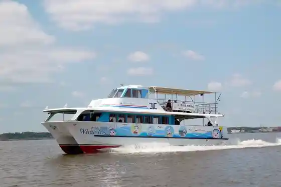
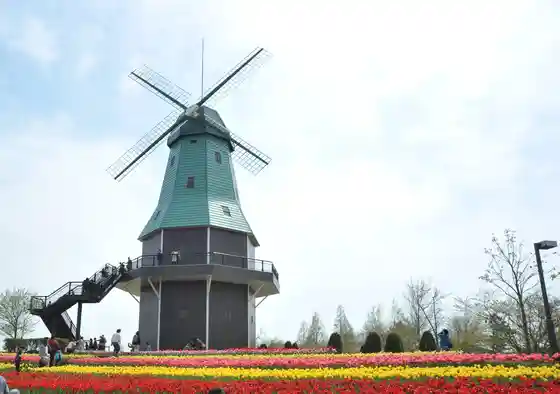
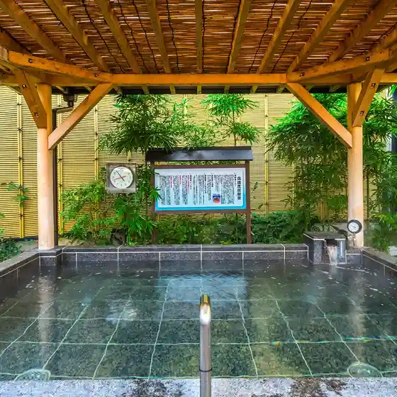
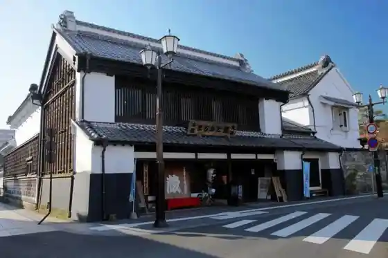

Kasumigaura Kanko Yuransen Rakusumariina (Howaitoairisu Go)
Tsuchiura, Ibaraki · 029-822-2437 · Official / source link

Kijo Park
Tsuchiura, Ibaraki · 029-824-2810 · Official / source link
Kasumigaura General Park
Tsuchiura, Ibaraki · 029-826-4829 · Official / source link

Yu Raku Village Tsuchiura Mise
Tsuchiura, Ibaraki · 029-825-1526 · Official / source link

Tsuchiura Machikado Kura (Daitoku)
Tsuchiura, Ibaraki · 029-824-2810 · Official / source link

Kerogaro Farm
Tsuchiura, Ibaraki · 029-832-3693 · Official / source link
Otto Numa Park
Tsuchiura, Ibaraki · 029-824-2810 · Official / source link
Kissa Kura
Tsuchiura, Ibaraki · 029-822-0081 · Official / source link
Manabe no Sakura (Manabe Shogakko)
Tsuchiura, Ibaraki · 029-824-2810 · Official / source link
Shiba Numa Shoyu (Kabu)
Tsuchiura, Ibaraki · 029-821-2400 · Official / source link
Tsuchiura Machikado Kura (no Village)
Tsuchiura, Ibaraki · 029-822-0081 · Official / source link
Sho Town no Kan (Ono Sho Town Fureai Plaza)
Tsuchiura, Ibaraki · 029-862-1002 · Official / source link
Kanko Ho Eisen (Tsuchiura)
Tsuchiura, Ibaraki · 029-824-2810 · Official / source link
Hasu Ta (Ta Village Oki Yado Te Noji Ku)
Tsuchiura, Ibaraki · 029-824-2810 · Official / source link
Resutoran Chutai
Tsuchiura, Ibaraki · 029-822-1068 · Official / source link
Kasumigaura Kankyo Kagaku Center
Tsuchiura, Ibaraki · 029-828-0960 · Official / source link
Sakuragawa Tsutsumi
Tsuchiura, Ibaraki · 029-824-2810 · Official / source link
Soba Tokoro Sho Town Iori
Tsuchiura, Ibaraki · 029-862-1026 · Official / source link
Unagi Nishiki Mizu
Tsuchiura, Ibaraki · 029-823-6047 · Official / source link
Tsuchiura Ritsu Museum
Tsuchiura, Ibaraki · 029-824-2928 · Official / source link
Ue Takatsu Kaizuka Furusato Rekishi no Plaza (Koko Museum)
Tsuchiura, Ibaraki · 029-826-7111 · Official / source link
Shinkawa Tsutsumi
Tsuchiura, Ibaraki · 029-824-2810 · Official / source link
Ryugamine Cherry Blossoms
Tsuchiura, Ibaraki · 029-824-2810 · Official / source link
Resutoran Murayama Tei
Tsuchiura, Ibaraki · 029-823-7332 · Official / source link
Koryu Saron Sho Town
Tsuchiura, Ibaraki · 090-4006-4195 · Official / source link
Yoshoku Jingisukan Hitsuji no Koya
Tsuchiura, Ibaraki · 029-833-2056 · Official / source link
Hitachi Aki Soba Tsuku Santei Kasumi Village
Tsuchiura, Ibaraki · 029-869-8170 · Official / source link
Jun Na Daruma
Tsuchiura, Ibaraki · 029-822-0127 · Official / source link
Tsuchiura Ichiko no Shidarezakura
Tsuchiura, Ibaraki · Official / source link
Niihari Komachi Paraguraidasukuru
Tsuchiura, Ibaraki · 029-862-5355 · Official / source link
Sosaku Wagashi
Tsuchiura, Ibaraki · 029-821-0677 · Official / source link
JA Tsuchiura Sanfuresshu Hasu Village
Tsuchiura, Ibaraki · 029-846-7933 · Official / source link
Funachu ((Ari) Morishige Shoten)
Tsuchiura, Ibaraki · 029-832-1555 · Official / source link
JA Tsuchiura Sanfuresshu Niihari Mise
Tsuchiura, Ibaraki · 029-862-3573 · Official / source link
Shoku Raku BAR Takeo
Tsuchiura, Ibaraki · 029-824-8540 · Official / source link
JA Tsuchiura Sanfuresshu Tsuchiura Mise
Tsuchiura, Ibaraki · 0298-21-4826 · Official / source link